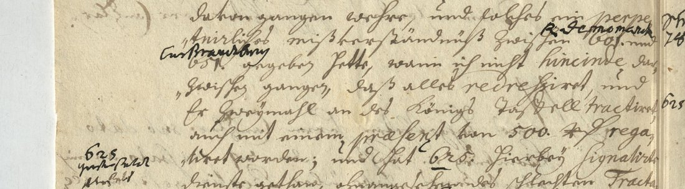
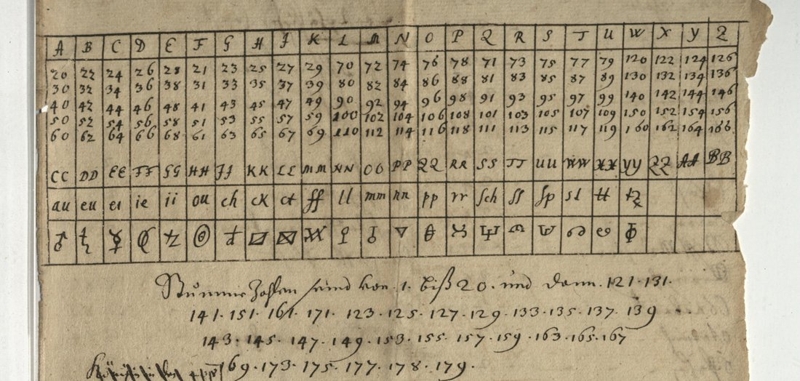
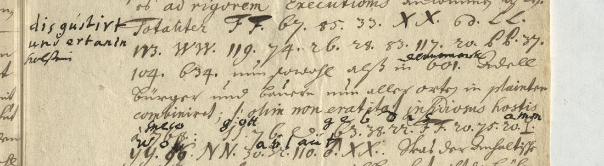

At a glanceKey from another file, partial · 59 of 64 cipher tokens
- The letter
- A signed despatch in German from Hamburg, dated 4/14 May 1672, to the Hessian chancellor (“Herr Canzler”) at Kassel. The writer is not identified.
- Where
- Hessisches Staatsarchiv Marburg, HStAM 4 f Dänemark Nr. 125, ff. 2–4. HCPortal record 494, “partially solved”, with no transcription attached.
- The cipher
- Names are written as three-digit code numbers (26 in the letter). Two short passages on the last page are in a letter cipher: five two-digit numbers for each letter, doubled capitals as more homophones, and signs for syllables.
- How it was deciphered
- A second hand glossed the code numbers on the leaf. The letter table of a Hessian key of 1666, filed in another Marburg collection (HCPortal key 255), reads both passages without change.
- What it says
- Danish anger at a French–Swedish treaty, a plan to bring Brandenburg into the Danish–Brunswick alliance, and Holstein “totaliter disgustirt” at the Landtag’s demands; “Gott geb das all wol ablauff”.
- Still open
- Five signs before “in Holstein” decipher as e r t a d and make no word. The glosses for codes 625 and 653 are only partly legible.
01 The letter and its glosses
The letter fills three pages. It opens “Hoch Edler Herr, Mein insonders hochgeehrter Herr Canzler” and is dated at the foot “Hamburg den 4/14 May 1672”, in both calendars. It is clear German in Kurrent script, with Latin and French words in Latin script. The writer reports on his reception at the Danish court, on ceremonial quarrels between Denmark and Brandenburg, on the mission of a Blumenthal (code 630), on a treaty between France and Sweden that left Denmark out, and on a Holstein Landtag at which the estates refused the King’s demands. This was the spring in which France opened the war on the Dutch Republic.
Names are written as code numbers: 601 for the King of Denmark, 651 for the Elector of Brandenburg, 829 for Berlin, 774 for Holland, 768 for Sweden, and so on. A second hand, in black ink and Latin script, wrote the meaning over almost every number and in the margins. The same hand wrote “disgustirt und ertarin holstein” in the margin beside the first letter-cipher passage, and a few letters over the second. This is the “partial solution” HCPortal refers to. The hand is not dated: it may be the Kassel chancery’s, or a later reader’s.

02 The key from another file
The two passages on f. 4r use a letter cipher, not the code numbers. HCPortal holds 319 cipher keys, 106 of them from the Marburg collections 4 d and 4 f. Looking through their first pages, four are of the same kind as this letter: two-digit homophones and doubled capitals. One of them, key 255 (HStAM 4 d Nr. 1234, ff. 13–16), is a Hessian key whose back sheet names Secretary Lincker and the years 1666 and 1676. Its deciphering table, key 254 on f. 12, confirms the doubled capitals.

In the table, A to K take the numbers 20 to 69 in columns of ten (A 20 30 40 50 60, B 22 32…, F 21 31…), L to U take 70 to 119, and W to Z take 120 to 166. CC stands for a, DD for b, and so on to BB for z. Further signs stand for au, ch, ff, ll, st, tt and other syllables, and 1 to 19 are nulls. The table gives the second passage’s glossed letters unchanged: 63 g, 38 e, 22 b, FF d, 20 a, 75 s, 96 o, NN l, 50 a, 32 b, 110 l. The key’s word list does not fit, though: there Alliance is 311 and Denmark 184, while this letter has codes from 303 to 834. The 1672 correspondence used the same letter table with another word list, which is not on HCPortal. For the code numbers the glosses are the only source.
03 The two passages

In this hand 6 looks like b and 2 like r, so “b7” is 67, “ro” is 20 and “bb” is 66. The first passage follows a report that the Holstein estates broke up “protestando” and would let it come to forced collection:
Totaliter FF 67 85 33 XX st LL 113 WW · 119 74 26 · 28 83 117 20 66 · 37 104 · 634
Totaliter disgustirt und [e r t a d] in Holstein, nun sowohl als in Dänemark Adel, Bürger und Bauern nun allerorten in plaintes combiniret.
“Totally disgusted and […] in Holstein, nobles, burghers and peasants are now joined in complaints everywhere, in Holstein as in Denmark.” The sign after XX is the key’s sign for st. The five signs 28 83 117 20 66 give e r t a d, which is not a word; the glosser stopped at the same place and wrote “ertarin”.
The second passage follows a Latin sentence about an insidious enemy:
insidiosus hostis 768: 55 76 tt · 63 38 22 · FF 20 75 · 20 ll · YY 96 NN · 50 32 110 au ff
insidiosus hostis Sueco: Gott geb das all wol ablauff.
“… the Swede, an insidious enemy: God grant that all goes well.” 768 is Sweden, as the margin note “Schweden 768” and the gloss “Sueco” say. In the table 55 is h; the glosser read g, and the word is Gott, so 55 is a slip for 53. The last two signs are read as the key’s au and ff signs, which look like an 8 and a doubled X; as plain numbers they would be a null and u.
04 The code numbers
All 26 code numbers in the letter, with the gloss over each (H: gloss; M: gloss partly legible; I: inferred):
- 601 King of Denmark (four times), 834 “Rey Danae”, King of Denmark; 651 Elector of Brandenburg (three times), 653 “C. v. Brandenb.” (M); 829 Berlin (twice); 630 Blumenthal (twice); 774 Holland, 775 the States General; 576 France; 768 Sweden (twice); 634 Holstein; 447 641 “Herzog von Ploen”; 303 alliance (H).
- 625, twice: the margin gloss reads something like “Statthalter Ahlefeldt” (M).
- 447 602 in “eine estroite alliance zwischen 447 602 und 834”: the glosser wrote “Haus Braunschweig”, struck it and wrote “Kayser”. Since 447 is Herzog in the same line and the clear text above names the “Foedus Dano-Brunsvicense”, 447 602 is taken as Herzog [von] Braunschweig (I).
The letter’s chief news in clear: the French–Swedish treaty, concluded without Denmark, “gibt Verdruss”, and 625 is to go to Berlin in a few weeks to bring Brandenburg into the Danish–Brunswick alliance.
05 Method
The HCPortal record and its three images were fetched through the HCPortal API. The cipher parts were transcribed from full-resolution crops. The margin gloss of the first passage was tried against its signs first, with the doubled capitals as nulls and as letters; neither fitted. All 319 key records on HCPortal were then fetched, and the first pages of the 106 Marburg keys from collections 4 d and 4 f were screened in contact sheets. Key 255 was the one whose letter table gave the second passage’s glossed letters without change. A short script applies it (decrypt.py). The five open signs were run through the project’s German language model for 1600–1670, allowing one or two copy slips, without a convincing word.
Extent: 64 cipher tokens (38 letter-cipher signs and 26 code numbers). All have a value; 59 read as sense, 92.2%. That is below the project’s 95% bar, so the extent is partial.
06 What remains uncertain
- Passage 1, signs 28 83 117 20 66 (e r t a d) before “in Holstein”: no word. The key reads each sign without doubt, so this is probably an enciphering slip of two or more signs. The glosser failed here too, and no second copy of the letter is online.
- Passage 2: 55 read as g (a slip for 53, M); the sign read as ll (M); the last two signs read as the au and ff signs (M).
- Codes 625 and 653: the glosses are only partly legible (M). 602 = Braunschweig is inferred (I).
- The writer’s signature is not made out. The other despatches in Nr. 125 are not digitised.
07 Sources
- Hessisches Staatsarchiv Marburg, Best. 4 f Dänemark Nr. 125, ff. 2–4. HCPortal record 494 (images: api.hcportal.eu media 1385–1387), record created by Eugen Antal.
- Hessisches Staatsarchiv Marburg, Best. 4 d Nr. 1234, ff. 12–16: HCPortal keys 254 (the Scala) and 255 (the key, 1666/1676).
- E. Antal and M. Mírka, on the Thirty Years’ War cipher keys in the Hessisches Staatsarchiv Marburg, HistoCrypt proceedings, for the Marburg key collection.
Transcription, decoder, code list, notes and reading: targets/hesse1672/ in the repository.